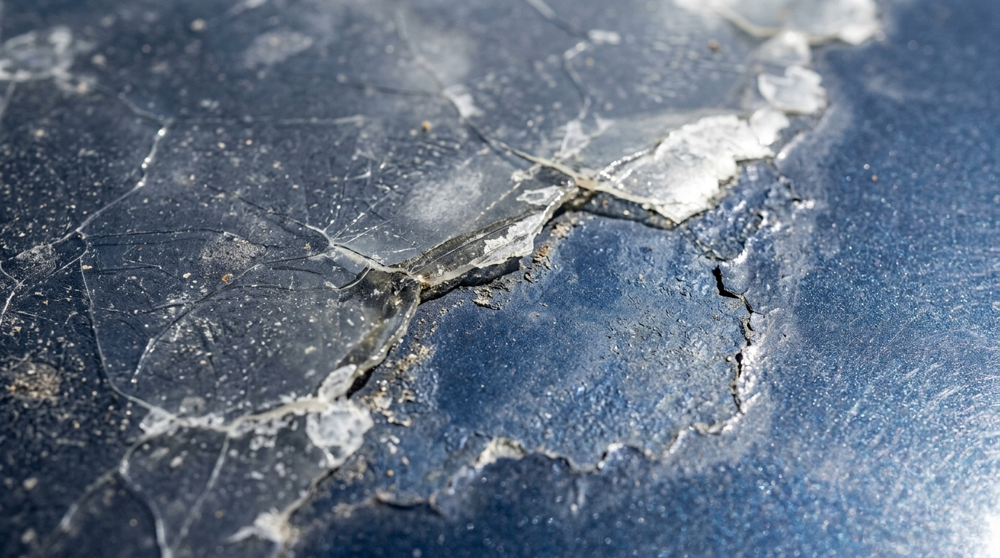
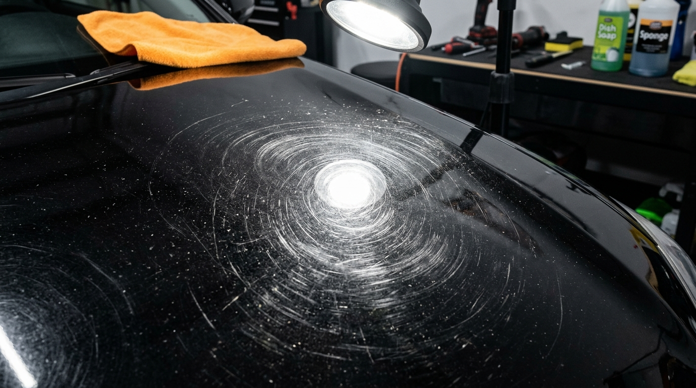
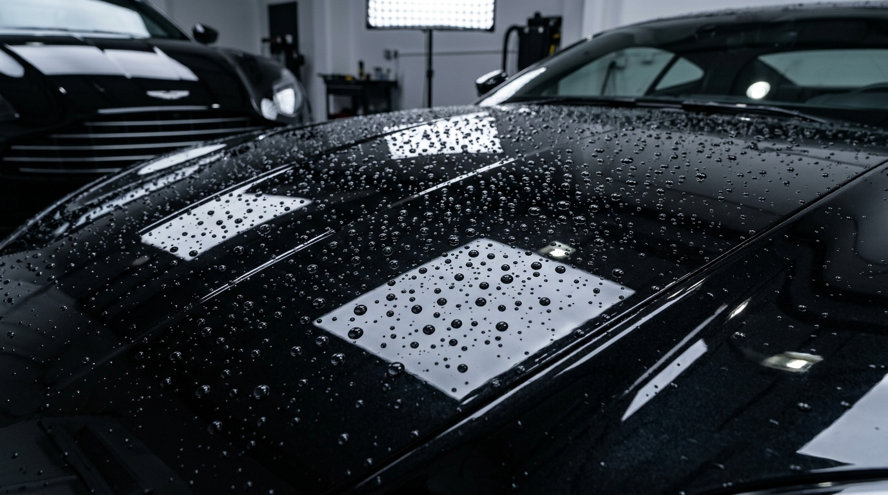

Como Proteger o Carro do Sol e da Chuva para Evitar Danos na Pintura
Entenda a fotodegradação térmica por raios UV, o perigo da chuva ácida secando ao sol e como selantes hidrofóbicos blindam o verniz.
Ler Artigo Completo ➔Guias práticos e orientações de engenharia automotiva para conservar o brilho de fábrica, evitar ferrugem na lataria, remover manchas químicas e proteger o verniz do seu veículo em Osasco.

Entenda a fotodegradação térmica por raios UV, o perigo da chuva ácida secando ao sol e como selantes hidrofóbicos blindam o verniz.
Ler Artigo Completo ➔
Aprenda a lidar com fezes de pássaros, seiva de árvore e calcário de garagem sem esfregar a seco nem desgastar a proteção de fábrica.
Ler Artigo Completo ➔
Saiba como inspecionar caixas de roda, desobstruir drenos de portas e vedar batidas de pedra antes que a corrosão perfure o aço.
Ler Artigo Completo ➔
Descubra a frequência segura para polimento de corte e entenda o limite de espessura útil do verniz para não queimar a lataria.
Ler Artigo Completo ➔Envie fotos pelo WhatsApp ou venha nos visitar na FG Car na Av. Visconde de Nova Granada em Osasco. Realizamos medição de micragem de verniz e planos de proteção sob medida!
⚡ Conversar com Especialista no WhatsApp: (11) 94004-7324